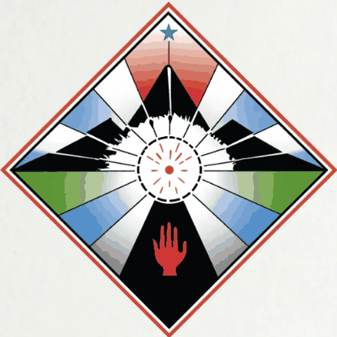
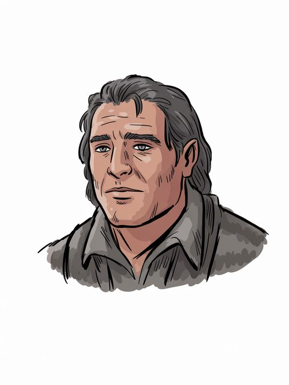

Beren
House of Bëor
House of Bëor (F.A. c.432–F.A. c.503)
Open the full record in the living archive →Part of the Arda Archive — a corpus-first index of Tolkien's legendarium; every fact cited, every silence declared.


House of Bëor
House of Bëor of Dorthoniona
F.A. c.432–F.A. c.503b
GENERATED. Ideogram V3, driven by a prompt written in this archive; no illustrator drew it and it must never be presented as though one had. Ruling 3 asks for the hand and this IS the hand -- 'generated' is an answer, 'unknown' would not be.c
“substitution of Celegorm for Thingol and Maglor for Beren in the Lay of”d
“was after named Erchamion the One-handed and Camlost the Emptyhanded.”e
“Never have I heard how Beren came thither over the hills; yet was he”f
The name stands in 4,073 cited lines, in 124 of the corpus's 192 texts — most often in The Lays of Beleriand (447), Beren and Luthien (423), The Book of Lost Tales Part Two (383).g
a The text — Silm, table III (House of Beor) [C]
b The text — [I-H]
c The ruling — the owner's ruling of 13 August 2026, on the 552 generated images: 'we are free to use them'. That settles the LICENCE and does not settle the HAND, which is recorded above as what it is. [C]
d The text — The Shaping of Middle Earth · l.352 [C]
e The text — The War of the Jewels · l.2042 [C]
f The text — The Book of Lost Tales Part Two · l.432 [C]
g Counted — site/arda_apparatus.json [C]
“(berein N. Ety/353, beren N. Ety/353) n. Ety/353” — the name is near this line and the archive does not assert that it is this record.h
of House of Bëor; in Dorthonion; child of Barahir, Emeldir; wedded to Lúthien; father or mother of Dior Eluchíl; F.A. c.432–F.A. c.503.i
Erchamion — called so by the Eldar of Doriath, in Sindarin. “Thereafter Beren was named Erchamion, which is the One-handed; and suffering was graven in his face.”j
Camlost — called so by himself, returning to Thingol without the Silmaril, in Sindarin. “Then he held up his right arm; and from that hour he named himself Camlost, the Empty-handed.”k
Lúthien (891), Barahir (148), Barahir (148), Elwë (Thingol) (143) — a shared line is a fact about the line, not a claim that the two met.l
Beren is Noldorin.m
a concordance headword bound to this route — searched over 937 headwords in site/arda_concordance.json, and nothing was found.n
h The line — Sindarin and Noldorin Dictionary · l.555 [EXT]
i The table — Silm, table III (House of Beor) [C]
j The passage — The Silmarillion · l.8839 [C]
k The passage — The Silmarillion · l.8907 [C]
l Counted — site/arda_apparatus.json [C]
m The lexicon — https://eldamo.org/content/words/word-3678812729.html [EXT]
n The search — site/arda_apparatus.json [C]
House of Bëor (F.A. c.432–F.A. c.503)
Open the full record in the living archive →